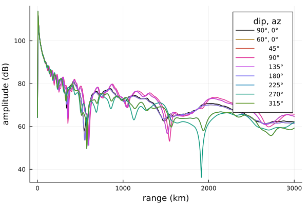
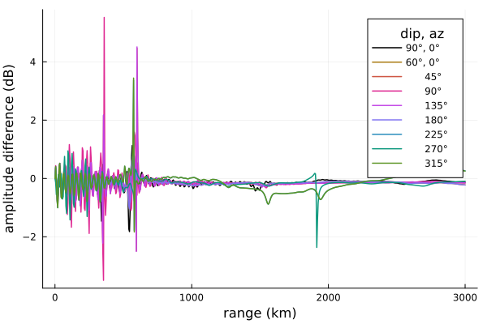

Magnetic field direction
In this example we'll look at the influence of the magnetic field direction on a nighttime and daytime ionosphere propagation path. Results will be compared to LWPC.
Generate scenarios
We'll use the JSON I/O functionality of LongwaveModePropagator to create the different magnetic field direction scenarios as a BatchInput{ExponentialInput}. We're doing this to ensure identical inputs are passed to LWPC. Although commented out in the generate function below, we locally saved the BatchInput as a JSON file and used it to feed a custom Python code which generates LWPC input files, runs LWPC, and saves the results in an HDF5 file.
First load the packages we need.
using Dates, Printf
using HDF5
using Plots
using LongwaveModePropagator
using LongwaveModePropagator: buildrun, Progress, next!For convenience, we'll define global OUTPUT_RANGES at which the electric field will be computed, and the magnetic field dip and azimuth angles B_DIPS and B_AZS (converted below from degrees to radians).
const OUTPUT_RANGES = 0:5e3:3000e3
const B_DIPS = [90.0, 60, 60, 60, 60, 60, 60, 60, 60]
const B_AZS = [0.0, 0, 45, 90, 135, 180, 225, 270, 315] ## vertical, N, E, S, WThe generate function produces the BatchInput of the scenarios. If we wanted, we could comment out the JSON lines near the bottom of the function to also write the BatchInput to a file. That's not necessary here.
function generate(hp, β)
batch = BatchInput{ExponentialInput}()
batch.name = "Magnetic field tests"
batch.description = "Varying magnetic field directions: vertical, N, E, S, W."
batch.datetime = Dates.now()
# Constants
frequency = 24e3
output_ranges = collect(OUTPUT_RANGES)
segment_ranges = [0.0]
hprime = [hp]
beta = [β]
# Ocean
ground_epsr = [81]
ground_sigma = [4.0]
b_mag = [50e-6]
b_dips = deg2rad.(B_DIPS)
b_azs = deg2rad.(B_AZS)
N = length(b_azs)
inputs = Vector{ExponentialInput}(undef, N)
for i in 1:N
input = ExponentialInput()
input.name = @sprintf("%d_%.0f_%.0f", i, b_dips[i], b_azs[i])
input.description = "Wait ionosphere with ocean ground at 24 kHz."
input.datetime = Dates.now()
input.segment_ranges = segment_ranges
input.hprimes = hprime
input.betas = beta
input.b_mags = b_mag
input.b_dips = [b_dips[i]]
input.b_azs = [b_azs[i]]
input.ground_sigmas = ground_sigma
input.ground_epsrs = ground_epsr
input.frequency = frequency
input.output_ranges = output_ranges
inputs[i] = input
end
batch.inputs = inputs
# json_str = JSON3.write(batch)
#
# open("bfields.json","w") do f
# write(f, json_str)
# end
return batch
end
batch = generate(82.0, 0.6);Run the model
Results from my custom LWPC script are saved in an HDF5 file. For easy comparison, we will also save the results from the Longwave Mode Propagator to an HDF5 file. Although not strictly necessary for a small number inputs like we have here, using an HDF5 file rather than the JSON output file that is generated automatically by LongwaveModePropagator when a file is passed to propagate is more robust for thousands or tens of thousands of input scenarios.
function runlmp(inputs, outfile)
h5open(outfile, "cw") do fid
# Create Batch attributes if they don't already exist
fid_attrs = attributes(fid)
haskey(fid_attrs, "name") || (fid_attrs["name"] = inputs.name)
haskey(fid_attrs, "description") || (fid_attrs["description"] = inputs.description)
haskey(fid_attrs, "datetime") || (fid_attrs["datetime"] = string(Dates.now()))
if haskey(fid, "outputs")
g = fid["outputs"]
else
g = create_group(fid, "outputs")
end
end
PM = Progress(length(inputs.inputs), 5)
for i in eachindex(inputs.inputs)
# If we've already run this, we can skip ahead
complete = h5open(outfile, "r") do fid
g = open_group(fid, "outputs")
haskey(g, string(i)) ? true : false
end
complete && (next!(PM); continue)
output = buildrun(inputs.inputs[i])
h5open(outfile, "r+") do fid
g = open_group(fid, "outputs")
o = create_group(g, string(i))
attributes(o)["name"] = output.name
attributes(o)["description"] = output.description
attributes(o)["datetime"] = string(Dates.now())
o["output_ranges"] = output.output_ranges
o["amplitude"] = output.amplitude
o["phase"] = output.phase
end
next!(PM)
end
endexamples_dir below will need to be modified to the directory where bfields_lmp.h5 is located and where you would like bfields_lmp.h5 to be saved.
root_dir = dirname(dirname(pathof(LongwaveModePropagator)))
examples_dir = joinpath(root_dir, "examples")
lmpfile = joinpath(examples_dir, "bfields_lmp.h5")
runlmp(batch, lmpfile)Plots
To more easily compare the amplitude and phase curves, we define a function to process the HDF5 files into arrays of amplitude and phase versus range and magnetic field azimuth.
function process(outputs)
dist = read(outputs["outputs"]["1"]["output_ranges"])
mask = indexin(OUTPUT_RANGES, dist)
agrid = Array{Float64}(undef, length(OUTPUT_RANGES), length(B_AZS))
pgrid = similar(agrid)
for i in eachindex(B_AZS)
o = outputs["outputs"][string(i)]
amp = read(o["amplitude"])
phase = read(o["phase"])
agrid[:,i] = amp[mask]
pgrid[:,i] = rad2deg.(phase[mask])
end
return agrid, pgrid
end
agrid, pgrid = h5open(lmpfile, "r") do o
agrid, pgrid = process(o)
endHere is the amplitude plot itself.
labels = string.(trunc.(Int, B_AZS), "°")
labels[1] = "90°, "*labels[1]
labels[2] = "60°, "*labels[2]
labels[3:end] .= " ".*labels[3:end]
colors = [palette(:phase, length(B_AZS))...]
pushfirst!(colors, RGB(0.0, 0, 0))
plot(OUTPUT_RANGES/1000, agrid;
linewidth=1.5, palette=colors, colorbar=false,
xlabel="range (km)", ylabel="amplitude (dB)",
labels=permutedims(labels), legendtitle=" dip, az", legend=true)
The amplitude corresponding to each magnetic field azimuth (where 0° is along the propagation direction) is color-coded in the plot above, but a couple of the colors appear to be missing. This is because 0° and 180° are identical. There is no "north/south" dependence. Therefore 45°/135° and 315°/225° are also identical.
On the other hand, there is a significant difference between propagation "east" (pinks) versus "west" (greens). This effect can be observed in real life.
Now we'll plot the difference from LWPC.
lwpcfile = joinpath(examples_dir, "bfields_lwpc.h5")
lagrid, lpgrid = h5open(lwpcfile, "r") do o
lagrid, bpgrid = process(o)
end
adifference = agrid - lagrid
plot(OUTPUT_RANGES/1000, adifference;
linewidth=1.5, palette=colors, colorbar=false,
xlabel="range (km)", ylabel="amplitude difference (dB)",
labels=permutedims(labels), legendtitle=" dip, az", legend=true)
The two models are a very close match. Where there are large differences they occur because of slight misalignment of nulls with respect to range from the transmitter. The 315°/225° line has the worst match, although it is not clear if there is a particular cause for this outside of the general differences between the two models.
Daytime ionosphere
Does magnetic field direction have a different level of influence with daytime ionospheres?
lmpfile = joinpath(examples_dir, "bfields_daytime_lmp.h5")
runlmp(generate(72.0, 0.3), lmpfile)
agrid, pgrid = h5open(lmpfile, "r") do o
agrid, pgrid = process(o)
end
plot(OUTPUT_RANGES/1000, agrid;
linewidth=1.5, palette=colors, colorbar=false,
xlabel="range (km)", ylabel="amplitude (dB)",
labels=permutedims(labels), legendtitle=" dip, az", legend=true)
savefig("magneticfield_daytime_amplitude.png"); nothing # hide
At these lower reflection altitudes the effect of Earth's magnetic field is decreased.
This page was generated using Literate.jl.